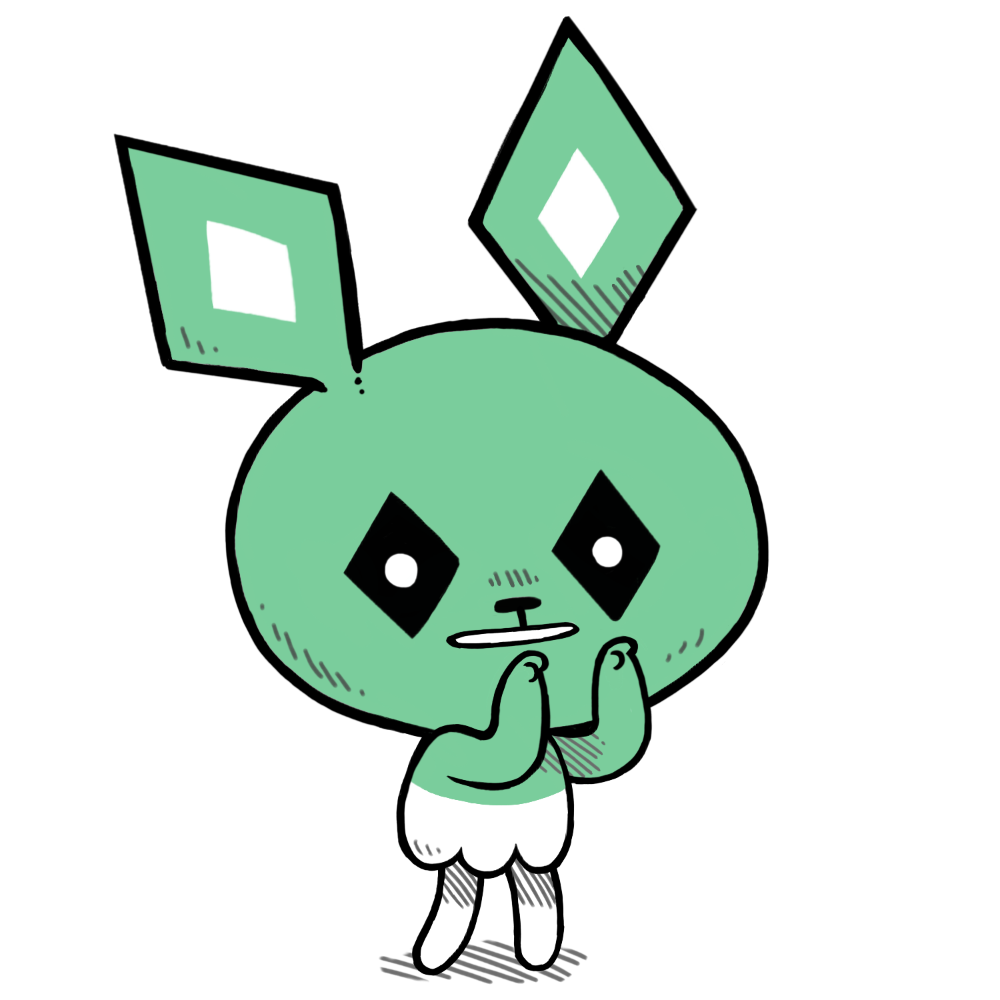

Noodle is a drawing program.
Noodle is a 1-bit illustration program for Varvara, written in Uxntal. It is currently used in the creation of various monochromatic illustration projects such as the Neauismetica.
The program features an invaluable cleanup brush that gets rid of the annoying sharp edges in pixelart lineworks and a collection of halftone patterns. Noodle exports to the icn format, but also supports uncompressed tga image import.
Source
uxnasm noodle.tal noodle.rom view raw
- Source, Latest
- Repository, Uxntal
- Read manual
- Download rom, 9kb
15K03— Noodle Uxn Release
incoming: roms flick oekaki moogle icn format gly format visual faqs events 2025 2022 2021